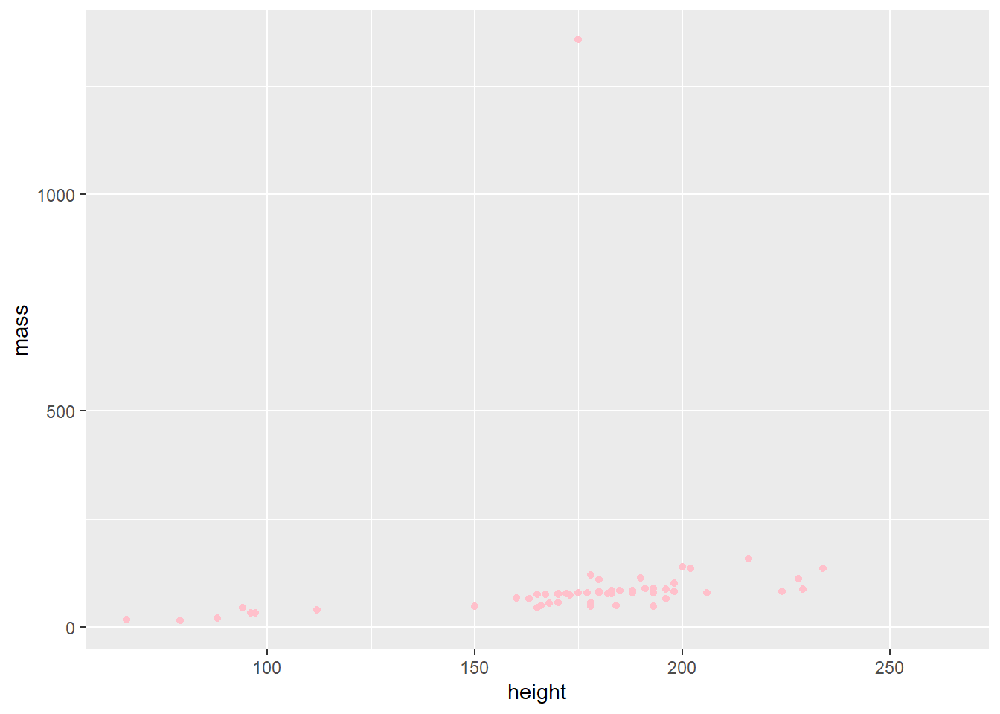
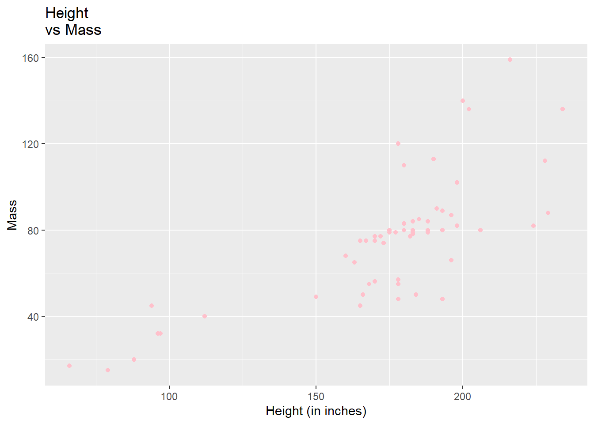
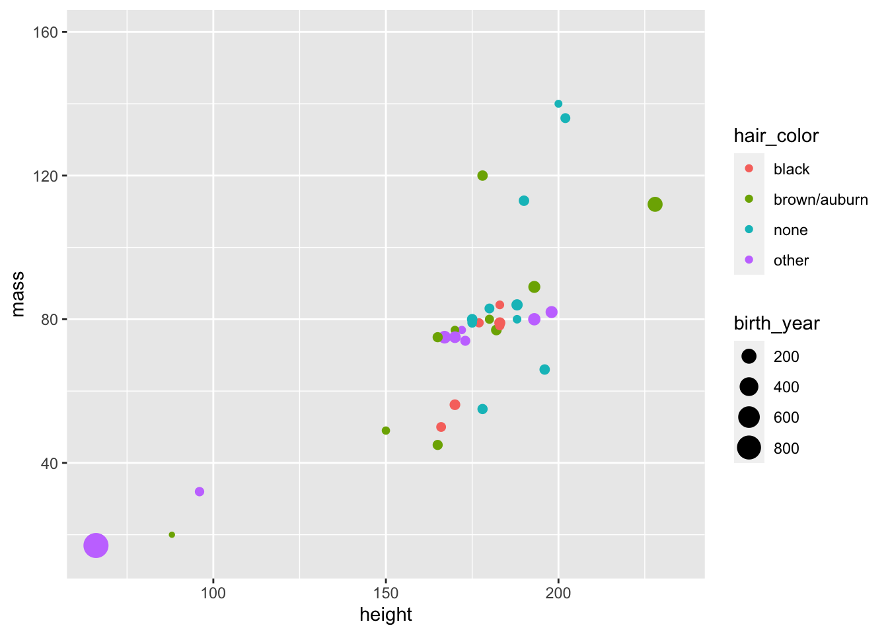
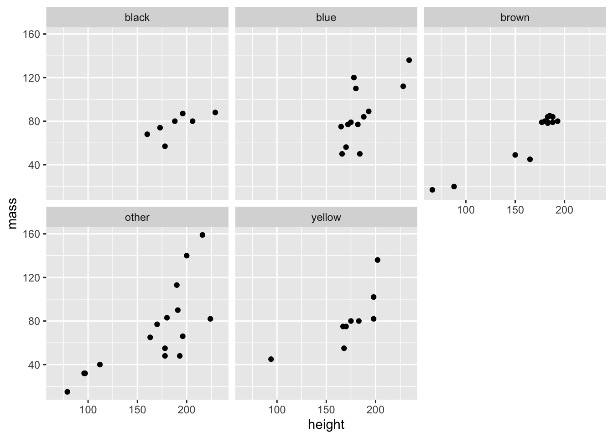
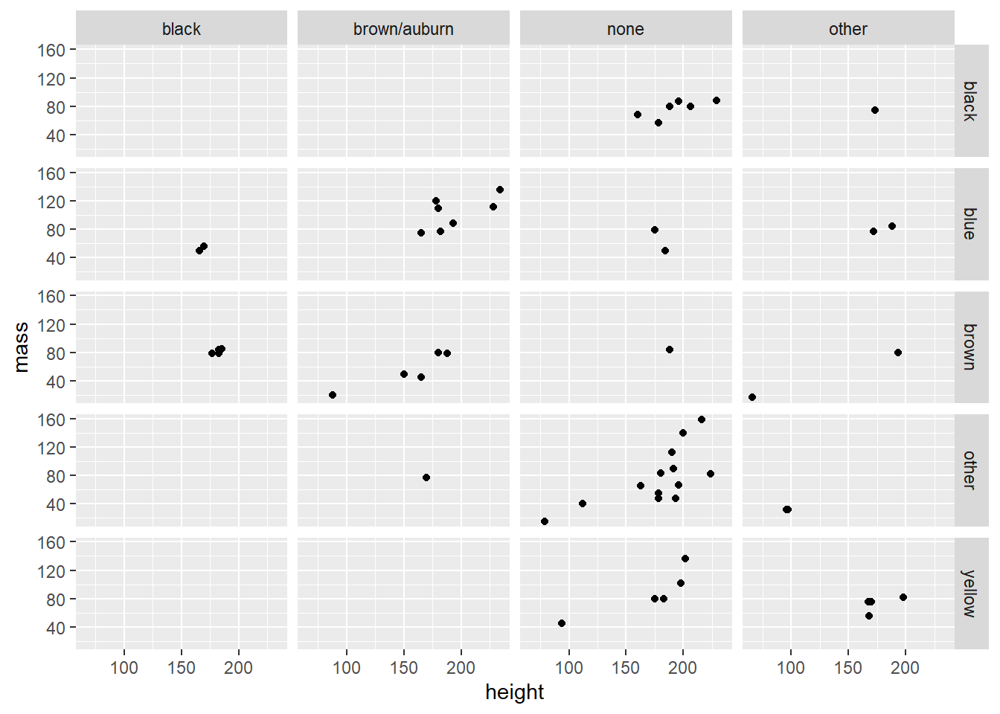
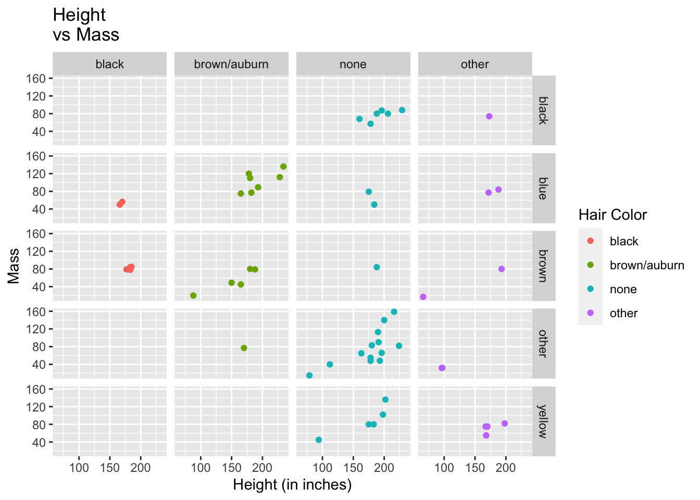
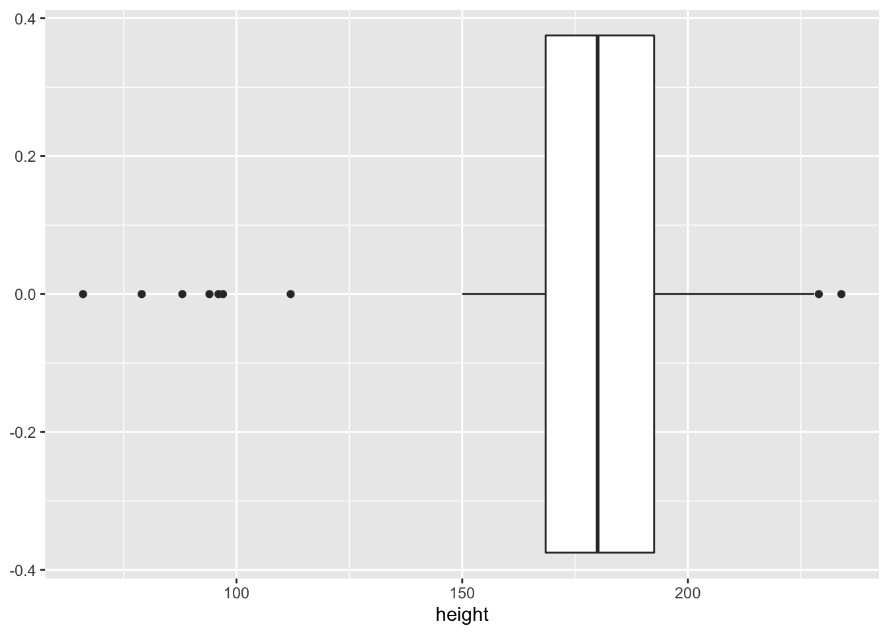
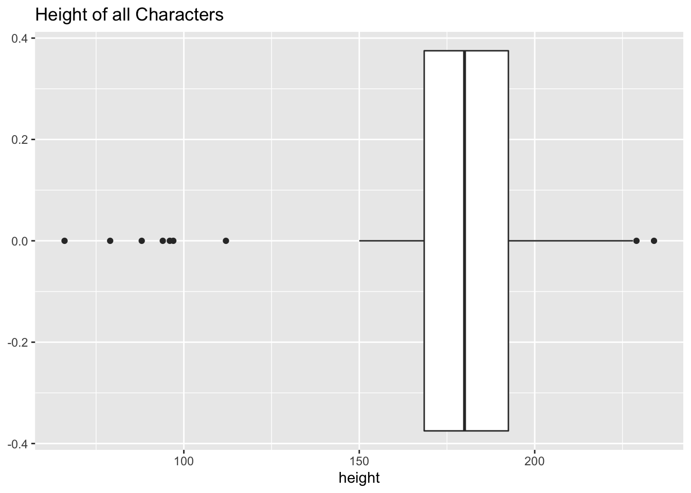
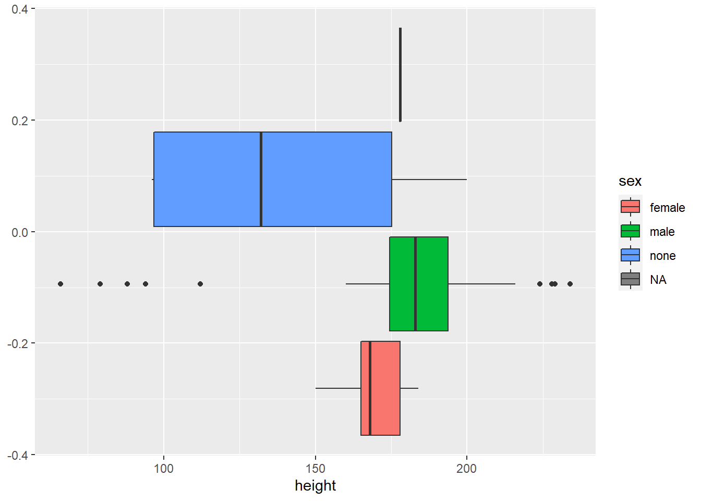

ae-02 Data visualization
Packages and Data
We will be using functions from the tidyverse package. Please library the package before we begin. If R can’t find the package, you need to install the package using install.packages(“tidyverse)
starwars <- read_csv("data/starwars.csv")For this analysis, we will data on the characters in the Stars Wars movie franchise.
Getting started
Get to know the data
We can use the glimpse function to get an overview (or “glimpse”) of the data.
glimpse(starwars)Rows: 87
Columns: 14
$ name <chr> "Luke Skywalker", "C-3PO", "R2-D2", "Darth Vader", "Leia Or…
$ height <dbl> 172, 167, 96, 202, 150, 178, 165, 97, 183, 182, 188, 180, 2…
$ mass <dbl> 77.0, 75.0, 32.0, 136.0, 49.0, 120.0, 75.0, 32.0, 84.0, 77.…
$ hair_color <chr> "other", "other", "other", "none", "brown/auburn", "brown/a…
$ skin_color <chr> "fair", "gold", "white, blue", "white", "light", "light", "…
$ eye_color <chr> "blue", "yellow", "other", "yellow", "brown", "blue", "blue…
$ birth_year <dbl> 19.0, 112.0, 33.0, 41.9, 19.0, 52.0, 47.0, NA, 24.0, 57.0, …
$ sex <chr> "male", "none", "none", "male", "female", "male", "female",…
$ gender <chr> "masculine", "masculine", "masculine", "masculine", "femini…
$ homeworld <chr> "Tatooine", "Tatooine", "Naboo", "Tatooine", "Alderaan", "T…
$ species <chr> "Human", "Droid", "Droid", "Human", "Human", "Human", "Huma…
$ films <lgl> NA, NA, NA, NA, NA, NA, NA, NA, NA, NA, NA, NA, NA, NA, NA,…
$ vehicles <lgl> NA, NA, NA, NA, NA, NA, NA, NA, NA, NA, NA, NA, NA, NA, NA,…
$ starships <lgl> NA, NA, NA, NA, NA, NA, NA, NA, NA, NA, NA, NA, NA, NA, NA,…- How many observations (rows) are in the data set? 87 rows
- How many variables (columns) are in the data set? 14
- What does each row represent? Each column?
Getting started with ggplot2
-
ggplotcreates the initial base coordinate system, and we will add layers to that base. We first specify the data set we will use withdata = starwars.
ggplot(data = starwars)
- The
mappingargument is paired with an aesthetic (aes), which tells us how the variables in our data set should be mapped to the visual properties of the graph. In ggplot2 , aesthetic means “something you can see”. Each aesthetic is a mapping between a visual cue and a variable. Let’s set the stage to explore the relationship between the height and mass of each Star Wars character.

What type of variable is height?
What type of variable is mass?
What plot is most appropriate to explore the relationship between height and mass?
The
geom_xxfunction specifies the type of plot we want to use to represent the data. In the code below, we usegeom_pointwhich creates a plot where each observation is represented by a point.
ggplot(data = starwars,
mapping = aes(x = height, y = mass)) +
geom_point() Warning: Removed 28 rows containing missing values (geom_point).
Step 1
Modify the following plot to change the color of all points to "pink". Note: pink needs to be in quotes because it is not a variable mapped to from our data to our plot. Because it is not a variable being mapped to our plot, it does not go in aesthetic.
ggplot(data = starwars,
mapping = aes(x = height, y = mass)) +
geom_point(color = "pink" ) Warning: Removed 28 rows containing missing values (geom_point).
- Do you notice anything interesting about these data?
Step 1B
For the sake of this activity, we are going to remove the extreme character.
## Remove outlier
starwars <- subset(starwars, mass < 1000)Step 2
Add labels for the title and x and y axes. Change the _____ to informative labels. This is good practice. Often, you do not want to use the column headers as labels.
ggplot(data = starwars,
mapping = aes(x = height, y = mass)) +
geom_point(color = "pink") +
labs(x = "Height (in inches)",
y = "Mass",
title = "Height \nvs Mass")
Step 3
An aesthetic is a visual property of one of the objects in your plot. Aesthetic options are:
- shape
- color
- size
- fill
Modify the plot below, so the color of the points is based on hair_color. Note: When you add aesthetic options, they need to be seperated by a , . What happens if you put hair_color in geom_point?
ggplot(data = starwars,
mapping = aes(x = height, y = mass, color = hair_color )) +
geom_point()
- Does the relationship of characters’ height and mass change based on their hair color?
Step 4
Modify the plot below, so the color of the points is based on hair_color and the size is based on birth_year.
ggplot(data = starwars,
mapping = aes(x = height, y = mass, color = hair_color, size = birth_year)) +
geom_point(alpha = 1)Warning: Removed 23 rows containing missing values (geom_point).
Step 5
Use facet_wrap to display the association between mass and height for different values of eye_color. Note: Eye color needs to be in quotes because it is not directly mapped from our data set in aesthetic.
ggplot(data = starwars,
mapping = aes(x = height, y = mass)) +
geom_point() +
facet_wrap("eye_color")
Step 6
Use facet_grid to display the association between mass and height for different combinations of eye_color and hair_color.
ggplot(data = starwars,
mapping = aes(x = height, y = mass)) +
geom_point() +
facet_grid(c("eye_color", "hair_color"))
Step 7
Use facet_grid to display the association between mass and height for different combinations of eye_color and hair_color with the color based on hair_color. Add labels for the title, x and y axes, and the color.
ggplot(data = starwars,
mapping = aes(x = height, y = mass, color = hair_color))+
geom_point() +
facet_grid(c("eye_color", "hair_color")) +
labs(x = "Height (in inches)",
y = "Mass",
title = "Height \nvs Mass",
color = "Hair Color"
)
Optional (Try it on your own)
Suppose now that you want to make a boxplot for the heights of all characters. What changes from the code above? Hint: Think about how many variables we are working with | Think about the type of plot we are making.
ggplot(starwars,
aes(x = height)) +
geom_boxplot()
Copy your code from the previous code chunk and add appropriate labels.
ggplot(starwars,
aes(x = height)) +
geom_boxplot() +
labs(title = "Height of all Characters")
Does height change based on the sex of the character? Create side-by-side boxplots to answer the question. Hint: Use group and fill in the aesthetic options.
ggplot(data = starwars,
mapping = aes(x = height , group = sex, fill = sex )) +
geom_boxplot(show.legend = T) 
Yes. It looks like the relationship between height differs based on the character’s sex. Character’s with no sex seem to be much shorter than the others, while also having the most variability.
render, commit, and push
If you made any changes since the last render, render again to get the final version of the AE.
Check the box next to each document in the Git tab (this is called “staging” the changes). Commit the changes you made using an simple and informative message.
Use the green arrow to push your changes to your repo on GitHub.
Check your repo on GitHub and see the updated files. Once your updated files are in your repo on GitHub, you’re good to go!